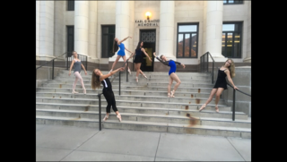
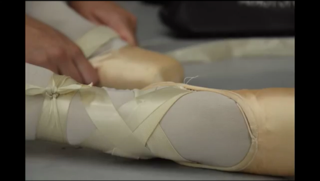
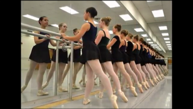

My hobby is dancing. Specifically, I am a ballerina, but I also enjoy other forms of dancing. I started out when I turned four, and my grandma signed me up for a preschool dance class at the local studio. I loved it, and I stuck to dancing at that studio for nine years. I worked hard in class and then performed on stage in the Nutcracker during the winter and in our spring recital. I stopped dancing there because we moved to Charlotte, North Carolina. When we moved, I started at a more rigorous studio. I danced with them for three years until we moved again. This time we moved to South Carolina where I am starting out at a new studio. I have stayed with dance this far because I am passionate about it.

I love to dance. I love it so much that saying so is almost an understatement. Dance is how I relax and feel calm. I can forget about my life and just focus on living in the movement when I go to dance. Dancing is also hard work, and I feel accomplished when I get better. Dancing has taught me life lessons on patience, hard work, and on accepting constructive criticism. Dance is a way to express how you feel without having the need to communicate through sound. It fills up a part of me that makes me who I am. What I do defines who I am. Dancing has defined a part of the person that I am today and who I will be in the future.
Dance is very challenging not only physically but mentally. Most high school aged dancers that are very serious about it dance from nine to twelve hours a week. Usually they start will a ninety minute to two hour regular ballet class for technique. There are pointe, jazz, tap, contemporary, hip-hop, modern, character, and lyrical classes that most dancers take afterward. Personally, I take pointe, contemporary, lyrical and jazz aside from my technique classes. Dancers are also encouraged to cross train, stretch, and workout outside of classes during the week. Many people think that dance is easier than most sports. They are very wrong. Dance, ballet especially, is very precise and requires exact and refined movement. It really does take strength to lift your leg up to your ear, both knees straight, toes pointed, turned out, hips aligned with your shoulders, and all your major muscle groups engaged. When dancing, it needs to look effortless and a dancer must remember to keep their chin up and look pleasant. Now, they are required to rise up onto their toes, putting their feet into a little box and have them balance all of their body weight onto a three inch platform. Does that sound easy now? Dance also consists of memorizing complex combinations of movement quickly during class. The teacher will tell you the combination and sometimes demonstrate while doing so and then you are required to do it yourself keeping in time with the music and reverse it for the other side. Dance is challenging, but when the hard work is paid off, it is rewarding.

As mentioned before, there are multiple forms of dancing. I have taken classes on many different types for fun, to improve my personal style, and for summer camps. I have stuck with ones that I like the best and have time for, but others became history. My favorite form of dance is ballet. Ballet dancing is very classical and structured. I also love how graceful and elegant it is. Dancing on pointe in ballet becomes a perk since, despite being painful, it feels like you are floating through space. Another form of dance is jazz. Jazz in itself has different styles, but it allows for more sharp and sassy movement. Then, there is modern dance. Modern is more alternate movement and is more free form, focusing on creating lots of shapes. Contemporary is a very fun form of dance. It is a little more fluid than modern. Lyrical dancing is just more of a ballet spin on contemporary. Character and Folk Dance involves dancing more traditional dancing and cultural flares. Hip-hop is sharp, more syncopated and more jagged dancing. Overall, each one of the styles of dance is interesting. I love to dance because it is challenging, and because it is fun for me.

By: Abby W.